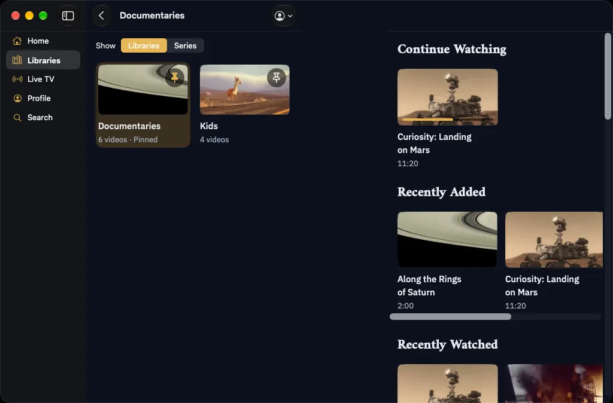
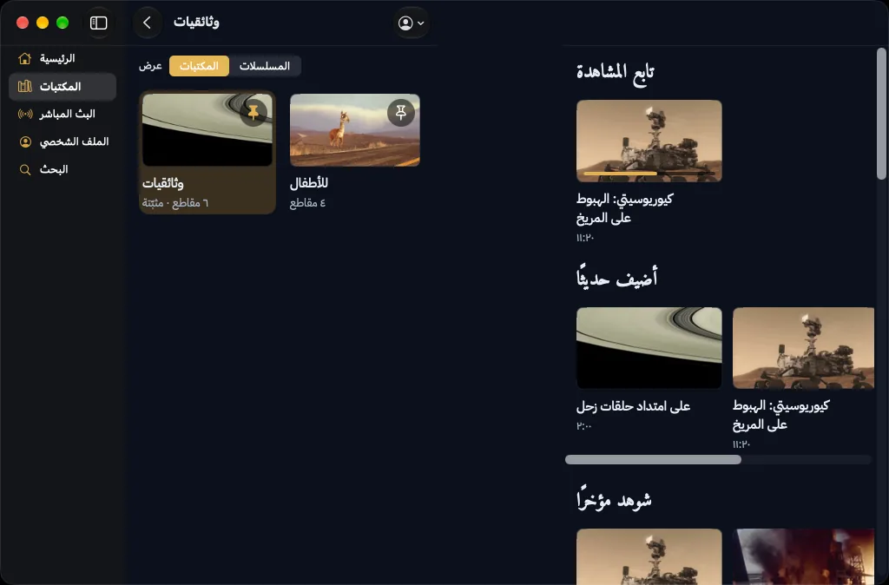
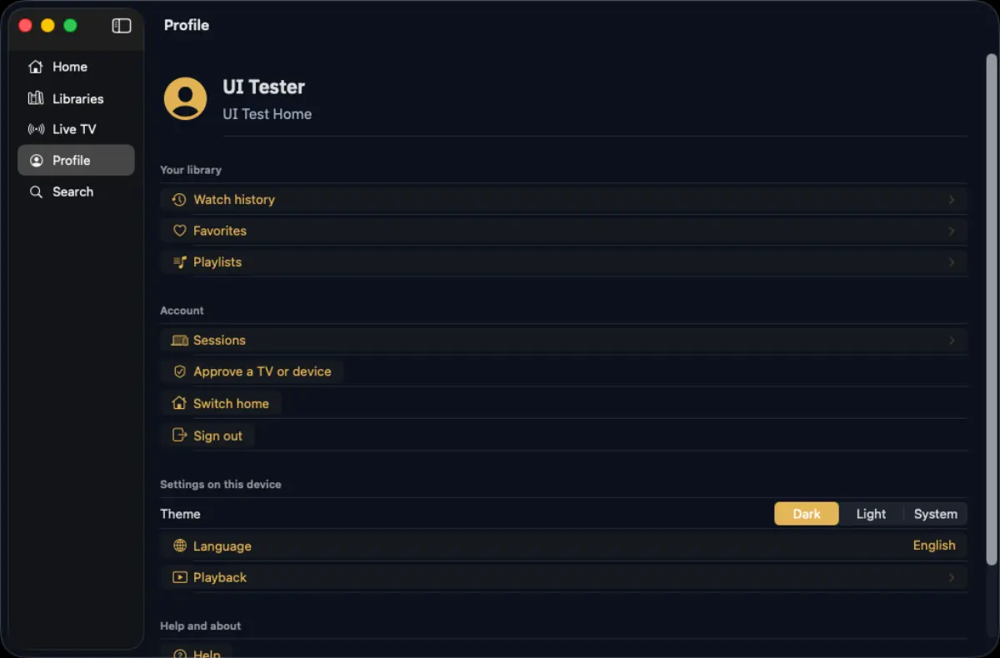

SwiftUI with some AppKit, apps/apple ("Maktaba Player Mac"), on the generated tokens
(MaktabaKit/…/Tokens.swift). The images are CI's own: the product-shots-mac artifact of main's CI run
45267535780 (2026-11-23, at 7d22f7d98), the same captures as
web/packages/website/static/shots/mac-*-1024.webp.



PlayerMacTests/PageSnapshotTests.swift against committed PNGs (library, series, video, TV panel; en, ar, ax3).NavigationSplitView list: grey selection, white icons, the system's materials.